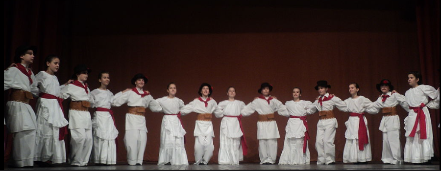

|
|
|
Nisam našao noviju interpretaciju ove makedonske pesme koja očigledno prati kolektivni ples. Igra koja se peva u Bugarskoj-Makedoniji zove se HORO. Kao i francuska „carole“, ona je nesumnjivo naslednica „horeje“ predstavljene na drevnim grčkim vazama. Ovo je očigledno mešana runda. Naziv KOLO u Srbiji-Hrvatskoj-Bosni se generalno oseća kao ekvivalent za "kolo", "točak" ili "krug". Ovo je nesumnjivo pogrešno. Kolo često ima oblik otvorenog lanca, a često i igrači pevaju. Stoga možemo misliti da je i ono potomak antičkog "choros"-a (što je reč koja se još uvek koristi u Grčkoj). Ljubitelj bretonskog jezika, kakav sam ja, ne može a da ne istakne da je reč "ples" na bretonskom „Koroll“. Ova reč dolazi, naravno, od francuskog "carole", kao i engleska reč "carol". |
Je n'ai pas trouvé d'interprétation récente de ce chant macédonien qui visiblement accompagne une danse collective. La danse chantée en Bulgarie-Macédoine s'appelle HORO. Comme la "carole" française, elle est sans doute l'héritière de la "chorea" représentée sur les antiques vases grecs. Il s'agit ici à l'évidence d'une ronde mixte. Le nom du KOLO de Serbie-Croatie-Bosnie est généralement ressenti comme l'équivalent de "kolo", la roue ou le cercle. C'est sans doute faux. Un kolo prend souvent la forme d'une chaîne ouverte et, souvent aussi, les danseurs chantent. On peut donc penser que c'est aussi un descendant de l'antique "choros" (qui est le mot toujours en usage en Grêce). L'amateur de langue bretonne que je suis, ne peut s'empêcher de signaler que le mot danse en breton est "Koroll". Ce mot est issu, bien entendu, du français "carole", comme l'anglais "carol". |